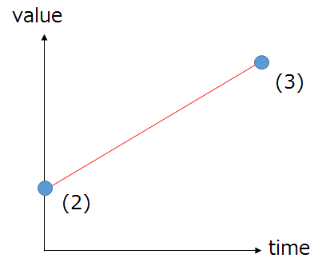

05. Let's create a hit mark (Slashing)!¶
Overview¶
In this chapter, you create an effect (hit mark) hit by a slash as used in an actual game. It is an effect where a sword line is expressed in the middle and small impacts flies around. In doing so, we explain copying and adding nodes and easing particles as new contents.
## PreparationWe made it possible to download the effect created in advance from the link below.
Since the length of the effect created is about 0.5 seconds, End in the Viewer Controls window is specified to 30 frames.
Easing¶
Easing is often used for various parameters.
Easing is a method of representing changes in values by specifying the values of the start and end points and automatically interpolating the values between them.
As shown in the figure below, position, rotation and scale have been specified by speed (1) or acceleration up to now. However, with this specified method, the longer the survival time becomes, the larger the value becomes.
On the other hand, in easing, specify the value (2) just after generation and the value (3) just before disappearing, and interpolate between values. Since you can specify the value just before disappearing, the shape of the particle becomes easy to understand.

PVA |

Easing |
There are several interpolation methods. Low speed 3 to high speed 3 can be specified for the start and end points respectively. The lower the speed, the harder the value changes, the faster the value, the easier the value changes.
Interpolation method
Create the effect¶
Effects are not often composed of single kind of particles but plural kinds of completely different looking particles. Effekseer can have multiple nodes. You can give completely different parameters for each node. Hit marks must also consist of more than one node. This time, you will create the nodes in order.
The direction of this effect is as follows.
The playback time is about 0.5 seconds (30 frames)
Color is purple (255, 32, 255) to pink (255, 128, 255)
Sword line node¶
You create a node where a particle slenderly cuts at an angle of 45 degrees, representing a sword line.
The sword line is specified to elongate in the direction of 45 degrees during 0.33 seconds (20 frames).
Rotated Billboard is specified to tilt the particles.
Values are changed as follows.
This chapter has many values to change. Even if the atmosphere is alike, it is not necessary to make them all the same.
| Window | Value type | Value |
|---|---|---|
| Basic Settings | Name | Line1 |
| Basic Settings | Time to live | 20 |
| Rotation | Angle | x=0, y=0, z=-45 |
| Scale | Scale Method | Easing |
| Scale | Start(Mean) | x=4, y=1, z=1 |
| Scale | End(Mean) | x=1, y=25, z=1 |
| Scale | Ease In | Fastest |
| Scale | Ease Out | Slowest |
| Basic Render Settings | Texture | Texture/Line01.png |
| Basic Render Settings | Blend | Additive |
| Render Settings | Configuration | Rotated Billboard |
| Render Settings | ColorAll | Easing |
| Render Settings | ColorAll-Start(Mean) | 255,128,255,255 |
| Render Settings | ColorAll-End(Mean) | 255,255,255,0 |
| Render Settings | ColorAll-Ease In | Slowest |
| Render Settings | ColorAll-Ease Out | Fastest |
At this point the effect is now as follows.

Sword line node
Impact node¶
When the attack hits, not only the sword line but also the impact is generated. Impact node is created like a sword wire.
Since the parameters of the sword line node and impact node are different, you need to add a node. First, you select Root. Then right click on Root to display the menu. From the menu, you choose Add Node.
Adding node
When the node is added, you click on the added node and edit that node.
The value ares changed as follows.
| Window | Value type | Value |
|---|---|---|
| Basic Settings | Name | Line2 |
| Basic Settings | Spawn Count | 10 |
| Basic Settings | Time to live | 20 |
| Rotation | Rotation Method | PVA |
| Rotation | Angle(Deviation) | x=0, y=0, z=180 |
| Scale | Scale Method | Easing |
| Scale | Start(Mean) | x=1, y=1, z=1 |
| Scale | End(Mean) | x=1, y=10, z=1 |
| Scale | Ease In | Fastest |
| Scale | Ease Out | Slowest |
| Basic Render Settings | Texture | Texture/Line01.png |
| Basic Render Settings | Blend | Additive |
| Render Settings | Configuration | Rotated Billboard |
| Render Settings | ColorAll | Easing |
| Render Settings | ColorAll-Start(Mean) | 255,128,255,255 |
| Render Settings | ColorAll-End(Mean) | 255,255,255,0 |
| Render Settings | ColorAll-Ease In | Slowest |
| Render Settings | ColorAll-Ease Out | Fastest |
fect is now as follows.

Impact node
Light emitting node No.1¶
Glowing effects at the moment of hit is better looking. The light emmiting node is also specified same as the sword line node.
Values are changed as fllows.
| Window | Value type | Value |
|---|---|---|
| Basic Settings | Name | Flash1 |
| Basic Settings | Time to live | 20 |
| Scale | Scale Method | PVA(Single) |
| Scale | Expansion Speed | 0.6 |
| Basic Render Settings | Texture | Texture/Particle01.png |
| Basic Render Settings | Blend | Additive |
| Render Settings | ColorAll | Easing |
| Render Settings | ColorAll-Start(Mean) | 255,32,255,255 |
| Render Settings | ColorAll-End(Mean) | 255,128,255,0 |
| Render Settings | ColorAll-Ease In | Slowest |
| Render Settings | ColorAll-Ease Out | Fastest |
At this point the effect is now as follows.

Light emitting node No.1
Light emitting node No.2¶
New emiitting node is added because the light emission is still sober. This light emitting node is almost same as the light emitting node created earlier. Effekseer can copy nodes.
After selecting the lighting node, right click to copy the node.
Adding node
After selecting Root, right-click to paste the node.
Adding node
You can see that the light emmitng node has been duplicated.
The changed values from the original light emmiting node are as follows.
| Window | Value type | Value |
|---|---|---|
| Basic Settings | Name | Flash2 |
| Basic Render Settings | Texture | Texture/Particle03.png |
You could create an effect that a slash hit.

Complete
Finally, I made it possible to download the effect created in this chapter.
Summary¶
In this chapter, You created effects that are likely to actually be used in games. In the next chapter, you will create even more complicated effects.